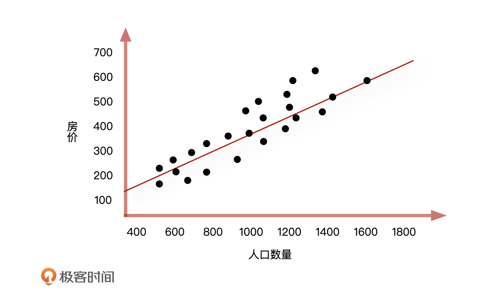
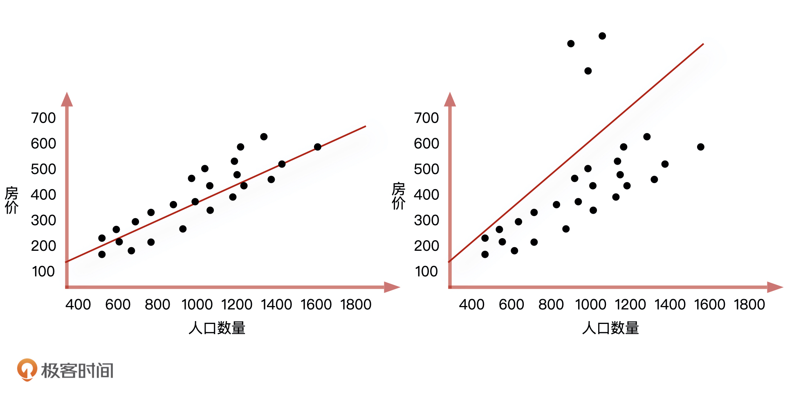
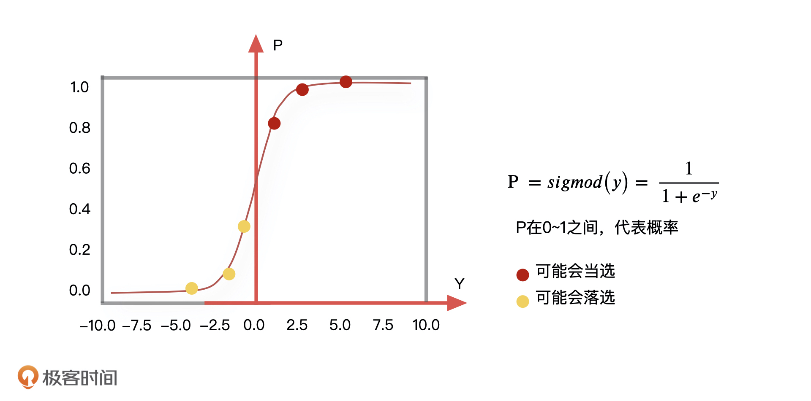
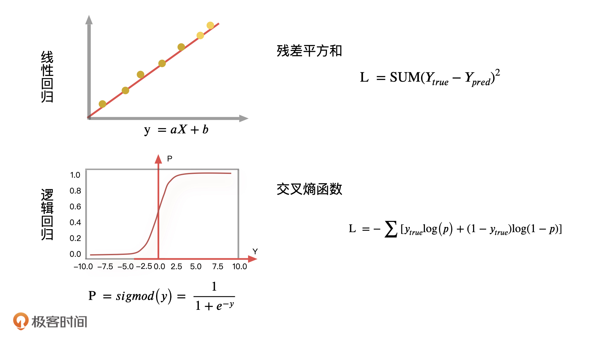
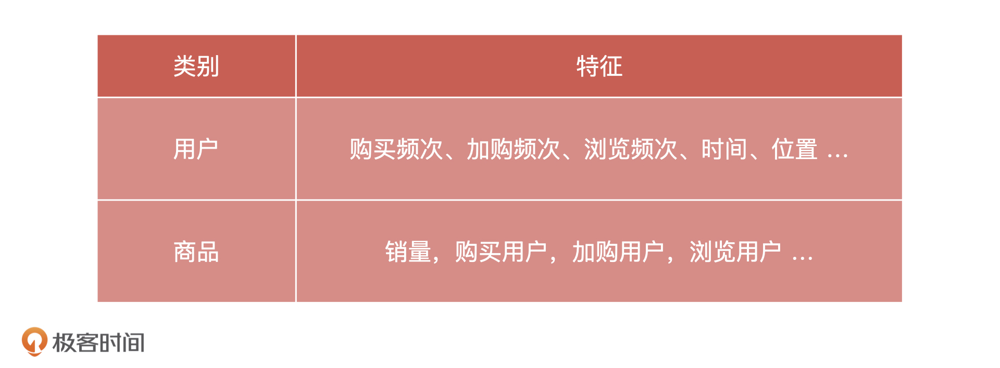
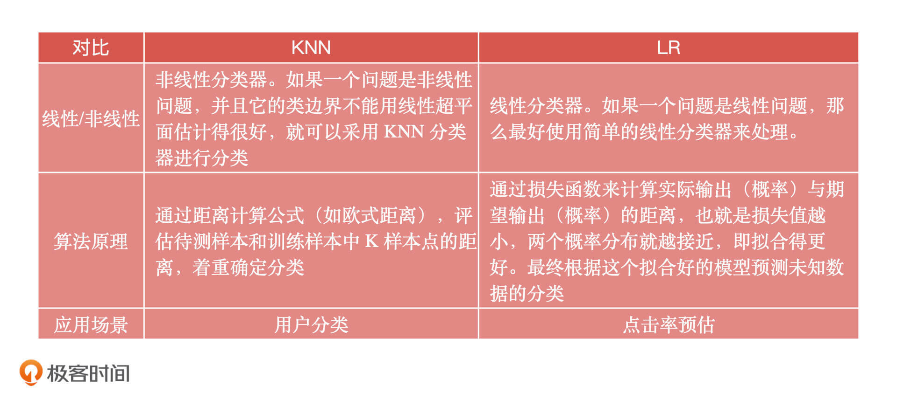
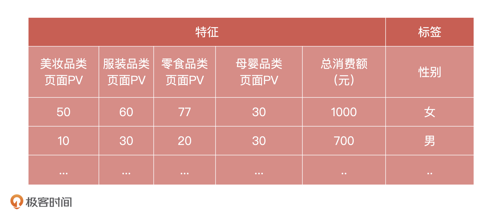

- 00 开篇词 你好，产品经理！你的未来价值壁垒在哪儿？.md.html
- 01 行业视角：产品经理眼中的人工智能.md.html
- 02 个人视角：成为AI产品经理，要先搞定这两个问题.md.html
- 03 技术视角：AI产品经理需要懂的技术全景图.md.html
- 04 过来人讲：成为AI产品经理的两条路径.md.html
- 05 通过一个 AI 产品的落地，掌握产品经理工作全流程.md.html
- 06 AI 模型的构建过程是怎样的？（上）.md.html
- 07 AI模型的构建过程是怎样的（下）.md.html
- 08 算法全景图：AI产品经理必须要懂的算法有哪些？.md.html
- 09 K近邻算法：机器学习入门必学算法.md.html
- 10 线性回归：教你预测，投放多少广告带来的收益最大.md.html
- 11 逻辑回归：如何预测用户是否会购买商品？.md.html
- 12 朴素贝叶斯：让AI告诉你，航班延误险该不该买？.md.html
- 13 决策树与随机森林：如何预测用户会不会违约？.md.html
- 14 支持向量机：怎么预测股票市场的涨与跌？.md.html
- 15 K-means 聚类算法：如何挖掘高价值用户？.md.html
- 16 深度学习：当今最火的机器学习技术，你一定要知道.md.html
- 17 模型评估：从一个失控的项目看优秀的产品经理如何评估AI模型？.md.html
- 18 核心技能：产品经理评估模型需要关注哪些指标？.md.html
- 19 模型性能评估（一）：从信用评分产品看什么是混淆矩阵？.md.html
- 20 模型性能评估（二）：从信用评分产品看什么是KS、AUC？.md.html
- 21 模型性能评估（三）：从股价预测产品看回归算法常用的评估指标.md.html
- 22 模型稳定性评估：如何用PSI来评估信用评分产品的稳定性？.md.html
- 23 模型监控：产品经理如何建设算法模型监控指标体系？.md.html
- 24 推荐类产品（一）：推荐系统产品经理的工作职责与必备技能.md.html
- 25 推荐类产品（二）：从0打造电商个性化推荐系统产品.md.html
- 26 预测类产品（一）：用户复购意向预测的底层逻辑是什么？.md.html
- 27 预测类产品（二）：从0打造一款预测用户复购意向的产品.md.html
- 28 预测类产品（三）：从0打造一款“大白信用评分产品”.md.html
- 29 自然语言处理产品：从0打造一款智能客服产品.md.html
- 30 AI产品经理，你该如何提升自己的价值？.md.html
- 31 AI产品经理面试，这些问题你必须会答！.md.html
- 春节加餐1 用户增长模型：怎么利用AI技术判断新渠道性价比？.md.html
- 春节加餐2 一次答疑，带你回顾模型评估的所有基础概念.md.html
- 期中周测试题 ，你做对了吗？.md.html
- 期中答疑 AI产品经理热门问题答疑合集.md.html
- 结束语 唯一不变的，就是变化本身！.md.html
- 捐赠
11 逻辑回归：如何预测用户是否会购买商品？
你好，我是海丰。
上节课，我们讲了线性回归算法。这节课，我们要讲一个和线性回归在名字上很相近的算法，它叫逻辑回归（LR，Logistic Regression）。虽然名字很相近，但是它们却有着本质上的差异。因为，逻辑回归是一种分类算法，解决的是分类问题，或者说，逻辑回归就是用来预测某个事情是“是或者否”这样的概率。
那为什么会有这样的差异，它们的区别到底是什么，逻辑回归可以解决什么样的分类问题呢？我们今天就通过一个预测用户购买商品的例子来好好聊一聊。
如何理解逻辑回归算法？
假设，最近你们公司组织了一场创新技术大赛，你作为 AI 产品经理，兴致勃勃地报了名。大赛的题目是预测公司附近的房价在未来某一天是涨还是跌，现有数据是公司附近每天的人口数量、房屋面积，以及房屋价格。
仔细分析已知数据之间的关系，我们发现，房屋价格会受到公司附近的人口数量和房屋面积这两个因素影响，它们之间关系大概率会是线性的。如果用我们上节课学过的线性回归算法来解决，这就是个二元线性回归问题，也就是通过每天已知的人口数量和房屋面积来预测房屋的价格。
这个时候，线性回归方程是：房价 = A1*人口数量 + A2*房屋面积 + B。
不过，当有两个变量的时候，问题就会更复杂，所以为了方便你理解，我们把这个模型简化一下，先只把“人口数量”这个影响房价的重要特征留下。这样一来，我们根据线性回归算法就能画出一个房价随人口数量变化的图形，它的公式是：房价 = 人口数量 * A + B。

到这儿，整个解决的过程都很顺利。我们通过线性回归对已知的信息，即房价和人口数量的关系进行了评估，然后通过这个关系对未来某天的人口数量做进一步分析，得到未来某天的房价是涨还是跌。

但这个时候问题来了，一旦这些数据中有几天的房屋价格信息被登记错了，而我们又把这些错误的数据录入到线性回归方程中（如上图所示），拟合出来的直线就会产生很大的偏移，这会让整个地区的房屋价格分布远远偏离原有的正常范围。这个时候我们该怎么办呢？
逻辑回归算法的原理
当线性回归的预测结果，由于受到个别极端数值的影响而不准的时候，我们就可以用逻辑回归来解决。
在数学中，我们通常会采取一些平滑函数，去减小这些极端值对于整体分布的影响，让整体的分布更加集中。所谓的平滑函数，你可以理解为是把线性回归预测到的具体的值，通过一个函数转化成为 0~1 的一个概率值，如下图所示。

比如，最常见的平滑函数就是 sigmod 函数，通过这个函数的映射，我们可以把某些极端值产生的影响变得非常微小，尽可能地降低它们造成误判的结果，而且，这个函数的输出是在 0~1 之间，也就是说逻辑回归的结果会输出一个事件的概率。对应到我们刚才的例子中，就是当sigmod 函数的输出大于 0.5 的时候，我们预测房价就会涨，小于 0.5 的时候，我们预测房价就会跌。
说了这么多，这里我再带你总结一下预测房价的流程。我们首先做一个线性回归，此时预测出来的结果值 Y 可以是一个任意连续值，然后我们再在这个结果 Y 基础上调用一个函数 sigmod，把一个评估结果顺利转化成了一个事件的概率。这就是逻辑回归在机器学习中的应用思路了。
总的来说，因为线性回归的结果可以是任意大小的连续型数值，所以这类回归模型可以被更广泛地应用在预测价格等任务上。而逻辑回归模型的输出只能在 0 到 1 之间，也就是表达一个事件会发生的概率，所以被广泛地应用在分类问题上。
如何计算逻辑回归的最优解？
到这儿，我们就把逻辑回归的原理讲完了。不过，我还想再和你聊聊逻辑回归最优解的问题。上节课，我们在计算线性回归最优解的时候，需要找到所有样本点相对于整体分布的距离当作损失函数的评估目标，也就是让线性回归的预测值和真实值之间的差异越小越好。
在逻辑回归里，我们一般会采用交叉熵函数的输出结果作为损失函数的评估目标，根据它来更新逻辑回归中的参数，再通过这些参数让整体的分布更加准确。
损失函数有很多种，像是我们这两节课说的平方损失函数，交叉熵损失函数，还有绝对值损失函数等等。实际工作中，我们需要根据不同的算法来选择特定的损失函数。

交叉熵损失函数一般是用来度量实际输出与期望输出之间的距离，交叉熵的值越小，两个概率分布就越接近，拟合得就更好。在我们的例子中，同样可以采用这个逻辑去分析样本真实分布和实际输出分布之间的误差。
逻辑回归算法是如何应用的？
最后，我们再来说说逻辑回归算法可以解决的问题。比如说：
- 判断用户的性别
- 预测用户是否点击指定商品
- 预测用户是否购买指定商品
这些问题除了是项目的目标以外，本身也可以帮我们更好地了解用户、服务用户。
那逻辑回归是怎么解决分类问题的呢？因为逻辑回归属于有监督学习的分类算法，所以在使用它之前，我们必须要先收集一批已标注好的数据作为训练集，比如说用户的基本信息、浏览日志，购买日志等等。
下面，我们就以预测用户对商品的购买偏好为例，看看使用逻辑回归是怎么实现的。其实我们可以将这个问题转换为是预测用户在未来某个时间段是否会点击某个商品，比如苹果手机。当我们把用户会点击标记为 1，不会点击标记为 0，这就变成了一个二分类问题。
整个过程可以理解成是，我们要利用历史点击过苹果手机的用户的行为日志，通过逻辑回归算法训练出一个模型，当输入一个新用户的浏览行为的时候，这个模型就能输出这个新用户点击苹果手机的概率。
这其实就是模型设计，我们在第6课讲过，模型设计最重要的工作是定义模型的目标变量和抽取数据样本。那针对刚才这个场景，模型的目标变量就是用户点击了苹果手机商品页面，数据样本就是历史产生过点击行为的用户浏览日志。这里，我们会用到的特征包括用户在京东的浏览，购买的历史信息。

然后，我们提取指定的时间跨度的特征数据，比如30天内的，用来生成的训练集数据，经过人工过滤，我们最终得到了30天内，浏览过苹果手机页面的用户特征和标签数据。
如果用户在给定的时间内购买了指定商品，就作为正例，没有购买，则作为负例。然后通过逻辑回归算法对每个指定的商品训练一个二分类模型，将训练好的模型保存下来，就可以用于预测用户在某个商品上的购买概率了，这种预测结果很适合用到推荐等场景中。
总的来说，逻辑回归模型作为基础的分类模型，它可以告诉你一个事件发生的概率，也就是帮你判断一个事件的可能结果。所以除了预测商品点击和购买率之外，我们还可以通过逻辑回归模型进行股票市场的分析判断，对股票形势进行预测。此外，逻辑回归模型也广泛应用在智能领域中，比如我们手机中指纹解锁、面部识别、智能医疗等等。
逻辑回归算法的优缺点
因为逻辑回归在线性回归基础上，加了一个 sigmod 平滑函数，把一个预测连续值转化成了一个概率值，所以，逻辑回归也继承了线性回归算法的全部优点，也就是运算效率高、可解释性强等等优点。不仅如此，逻辑回归因为采取了平滑函数，所以它还减小了极端值对于整体分布的影响，让整体的分布更加集中。
也正是因为逻辑回归模型简单高效，易于实现，所以它一般也会用来为后续模型优化提供一个不错的 baseline，就比如，我们在排序这样的服务中也使用了逻辑回归模型。
不过，既然继承了线性回归的优点，逻辑回归同样也存在和线性回归类似的缺点。作为分类模型，它是根据事物的线性分布转化为概率作为判断，也就是说如果一个事物不是简单的线性分布，那么它的结果也不会很理想。
总结
逻辑回归算法是机器学习领域中经典的分类算法，作为产品经理，我们要掌握它的核心原理、应用场景以及优缺点。
逻辑回归的核心原理就是在线性回归模型基础上，把原有预测的连续值转化成一个事件的概率，用来解决分类问题。在实际应用中，逻辑回归也可以在线性回归的基础上做进一步预测。
比如说，线性回归可以用来预测身高、销售额、房价、库存是多少，逻辑回归就可以预测身高是高了还是矮了，预测销售额提升了还是降低了，预测房价涨了还是跌了，预测库存够用还是不够用等等。
总之，逻辑回归一般用来预测广告点击率、商品点击率、商品推荐、股价预测、产品销量预测等等。
最后，逻辑回归优点可以总结为4点，简单易实现，运算效率高，可解释性很强，模型分布更集中，它的缺点是对于非线性分布的预测结果不会很理想。
重要知识总结完了之后，我还想说一个额外的问题，我们知道逻辑回归算法和 KNN算法都是分类算法，也都可以解决分类问题，那你知道它们之间的区别吗？你可以先自己想想，为了方便你理解，我把它们之间的对比表格放在了下面，你可以看一看。

课后讨论
假设，我们现在有某个网站 1000 个用户的行为数据，以及这些行为数据对应标注的用户性别，你能通过逻辑回归，利用这些行为数据实现对用户性别进行预测的功能吗？特征和标签的示例参考如下：

期待在留言区看到你的思考和设计方案，我们下节课见！
© 2019 - 2023 Liangliang Lee. Powered by gin and hexo-theme-book.